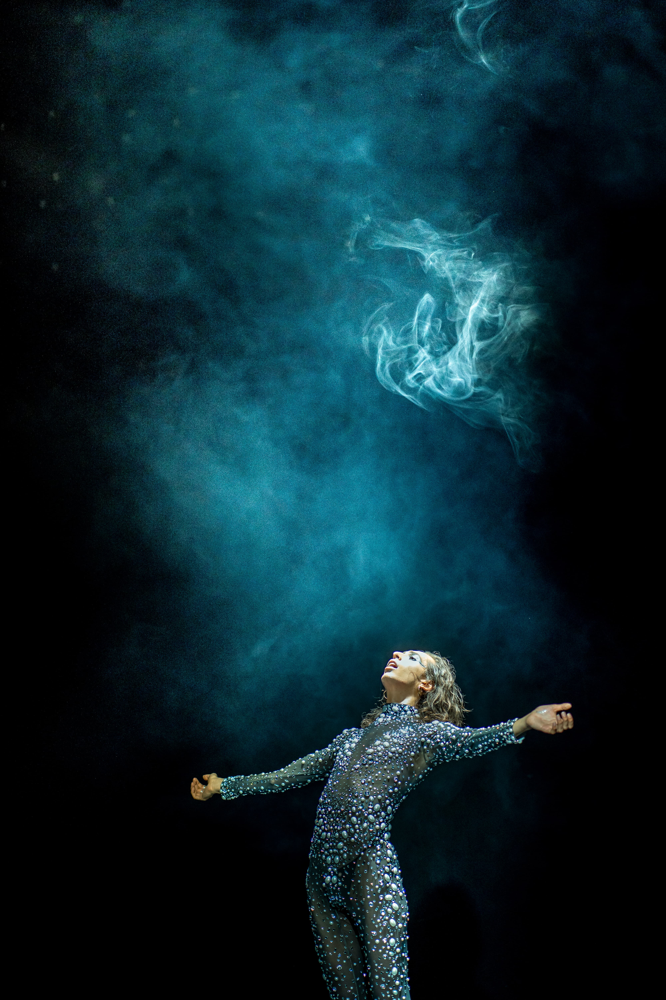
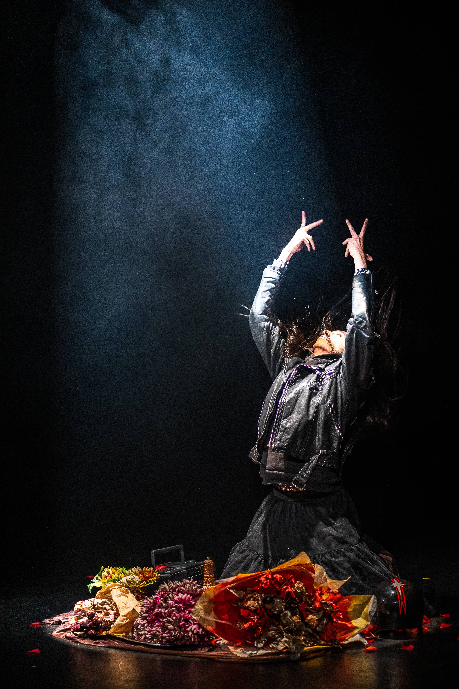
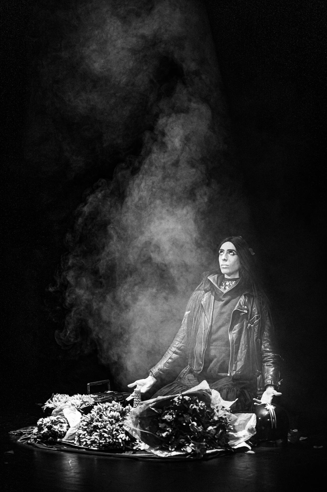
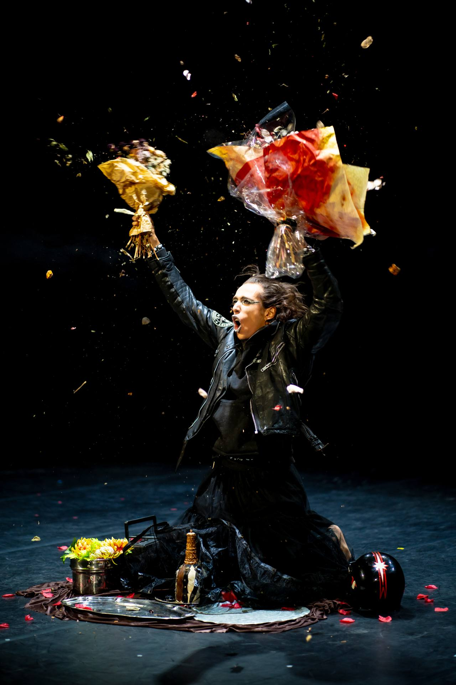
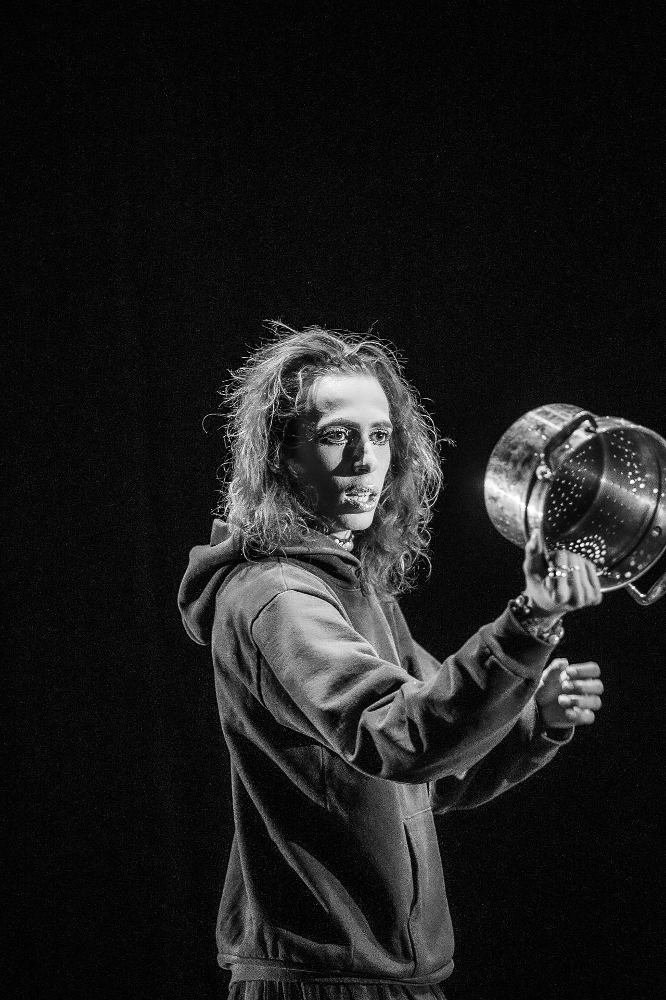

POLYMORPHE
POLYMORPHE
/
POLYMORPHE

Un sort jeté. Une invocation à la déesse Hermaphrodite. Un dé-drag : non pas l'accumulation flamboyante mais la décomposition lente, couche après couche, jusqu'à ce qu'une seconde peau apparaisse — plus vulnérable, plus précieuse, plus proche de l'os.
A spell cast. An invocation to the goddess Hermaphrodite. An un-drag: not flamboyant accumulation but slow decomposition, layer after layer, until a second skin appears — more vulnerable, more precious, closer to the bone.


Polymorphe commence terrestre, cloué·e au sol dans ses contradictions. Puis Conne de Brigitte Fontaine éclate et tout devient lipsync déjanté, profanation joyeuse de sa propre image, punk comme exutoire, dérision comme arme.
Polymorphe begins earthbound, nailed to the floor in their contradictions. Then Conne by Brigitte Fontaine bursts open and everything becomes deranged lipsync — joyful profanation of one's own image, punk as outlet, derision as weapon.
Vient ensuite la bascule : face contre terre, micro devant la bouche, un texte poétique qui jaillit de l'inconscient comme une langue qu'on ne savait pas parler. Puis le silence. Puis la musique qui surgit sans geste, réponse de la déesse, et le corps se métamorphose, révèle une armure de lumière, un corps réconcilié.
Then comes the tilt: face to the floor, microphone at the mouth, a poetic text springing from the unconscious like a tongue one did not know one spoke. Then silence. Then music surges without gesture — the goddess's reply — and the body metamorphoses, reveals an armour of light, a reconciled body.



Ce n'est pas une performance sur la non-binarité. C'est une performance non-binaire, qui ne cherche pas une moitié perdue mais l'unité déjà là, enfouie, fendue, obstinément vivante.
This is not a performance about non-binarity. It is a non-binary performance — one that does not seek a lost half but the unity already there: buried, split open, stubbornly alive.